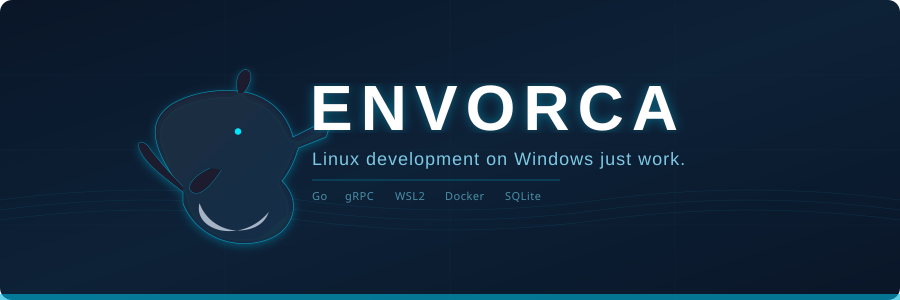

Detects
Seven health probes cover the entire stack: daemon health, Windows OS, virtualization firmware and services, WSL lifecycle, Linux kernel version, system memory, and the Docker container runtime.

Envorca is a lightweight local daemon that manages WSL2 and Docker behind Windows dev workflows — it watches your environment, explains what broke in plain language, and fixes it safely.
WSL2 is powerful but fragile. Distributions silently die, Docker stops answering, and virtualization breaks after a Windows update. Envorca handles the diagnostics and the recovery so you can focus on code.
Seven health probes cover the entire stack: daemon health, Windows OS, virtualization firmware and services, WSL lifecycle, Linux kernel version, system memory, and the Docker container runtime.
Every probe reports what is wrong, why it matters, and Envorca's recommendation — in plain language. No cryptic WSL error dumps.
Recovery follows a diagnose → propose → confirm → execute → verify flow. Destructive actions always require your explicit confirmation.
Diagnostic snapshots and repair outcomes are recorded in a local SQLite database with bounded retention, so history is always available.
A real-time event bus surfaces daemon activity as it happens, with a replay buffer so you never miss startup or repair events.
Grab envorca-windows-amd64.zip from the latest release (the "nightly" build refreshes on every push to main).
Keep envorca.exe and envorcad.exe in the same folder — the CLI locates the daemon next to it.
Open PowerShell in that folder and run envorca.exe start. The daemon launches detached over a local named pipe — no admin rights, no TCP, no installation.
[Environment]::SetEnvironmentVariable("Path", $env:Path + ";C:\path\to\envorca", "User")envorca from any terminal.
$ envorca.exe start launch the daemon in the background
$ envorca.exe doctor diagnose the whole WSL2 + Docker stack
$ envorca.exe repair propose and apply safe fixes
$ envorca.exe status quick overall health overview
$ envorca.exe events stream daemon events in real time
$ envorca.exe history view past diagnostics and repairs
$ envorca.exe stop shut the daemon down| Command | Description |
|---|---|
envorca start | Start the Envorca daemon (detached background process) |
envorca stop | Gracefully shut the daemon down |
envorca status | Daemon state, overall health, per-component summary |
envorca doctor | Detailed diagnosis: what's wrong, why, how to fix it |
envorca repair [--yes] | Propose and apply safe, deterministic repair actions |
envorca events [--replay] | Stream daemon events (startup, repairs, lifecycle) |
envorca history [--limit N] | Recorded diagnostic snapshots and repair outcomes |
envorca ping | Check daemon liveness and version |
envorca version | Print the CLI version |
wsl --set-default Ubuntu-24.04).
Capability acknowledged, Envorca's container_runtime probe looks for a Docker CLI inside that distro. If you use Docker Desktop, enable WSL integration for your distro in its settings.
wsl --install -d Ubuntu from an elevated shell, then reboot.Envorca uses a daemon + thin client architecture. The CLI (a thin Cobra client) dials the daemon over local IPC — a named pipe on Windows — and renders responses. All infrastructure logic lives in the daemon: it talks to WSL2 via wsl.exe argument slices (never shell strings) and to containers through a runtime-driver interface. Communications never leave your machine and nothing listens on TCP.